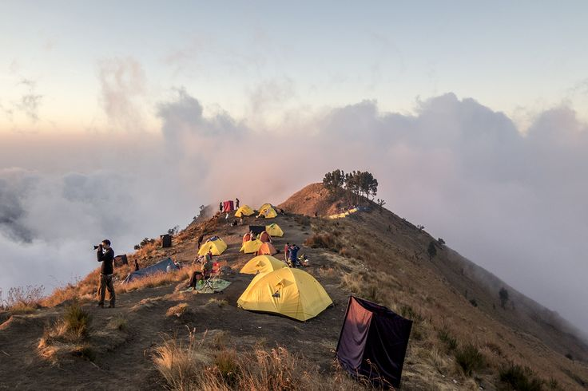
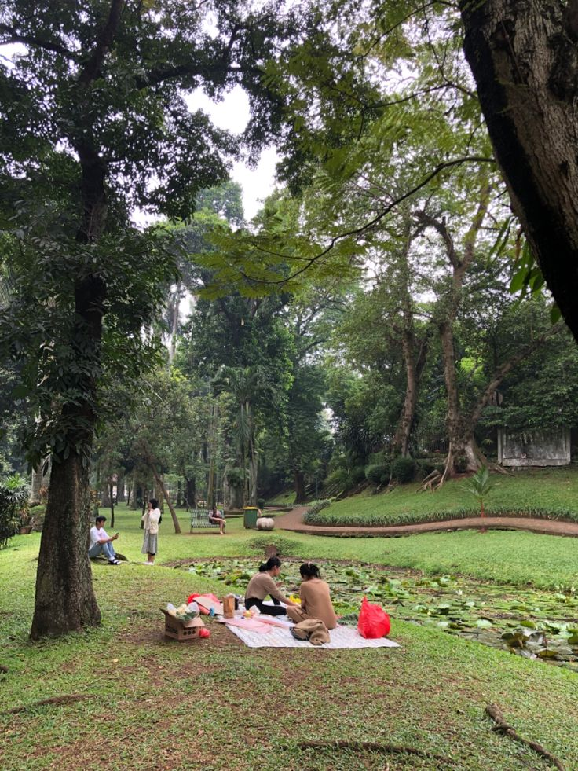

Pantai Senggigi
Pantai Senggigi adalah salah satu destinasi wisata paling terkenal di Pulau Lombok, Nusa Tenggara Barat, yang terletak sekitar 12 kilometer dari Kota Mataram. Pantai ini memiliki garis pantai yang panjang dengan pasir putih bercampur hitam, air laut yang jernih, serta ombak yang relatif tenang sehingga cocok untuk berenang, snorkeling, maupun berselancar ringan. Keindahan Senggigi semakin terasa saat matahari terbenam, karena panorama sunset di sini sering disebut sebagai salah satu yang terbaik di Lombok. Selain itu, kawasan Senggigi juga dilengkapi dengan berbagai fasilitas wisata seperti hotel, restoran, bar, dan pusat hiburan, menjadikannya pusat pariwisata modern sekaligus gerbang menuju destinasi lain seperti Gili Trawangan dan Gunung Rinjani.
Gunung Rinjani
Gunung Rinjani adalah gunung berapi aktif yang menjadi ikon Pulau Lombok sekaligus salah satu gunung tertinggi di Indonesia dengan ketinggian sekitar 3.726 meter di atas permukaan laut. Gunung ini terkenal dengan pemandangan alamnya yang spektakuler, mulai dari hutan tropis, padang savana, hingga kawah besar yang di dalamnya terdapat Danau Segara Anak berwarna biru kehijauan. Jalur pendakian Rinjani menawarkan pengalaman menantang sekaligus mempesona, dengan panorama sunrise dan sunset yang menakjubkan dari puncaknya.


Taman Udayana
Taman Udayana adalah salah satu ruang terbuka hijau terbesar dan paling populer di Kota Mataram, Nusa Tenggara Barat, yang berfungsi sebagai pusat rekreasi, olahraga, kuliner, sekaligus memiliki nilai sejarah. Terletak di Jalan Udayana, Kecamatan Selaparang, taman ini selalu ramai dikunjungi warga maupun wisatawan karena aksesnya mudah dan gratis sepanjang hari.